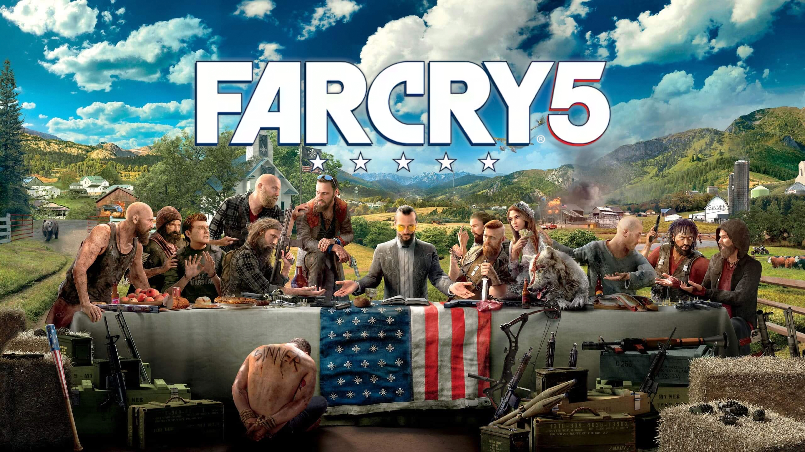
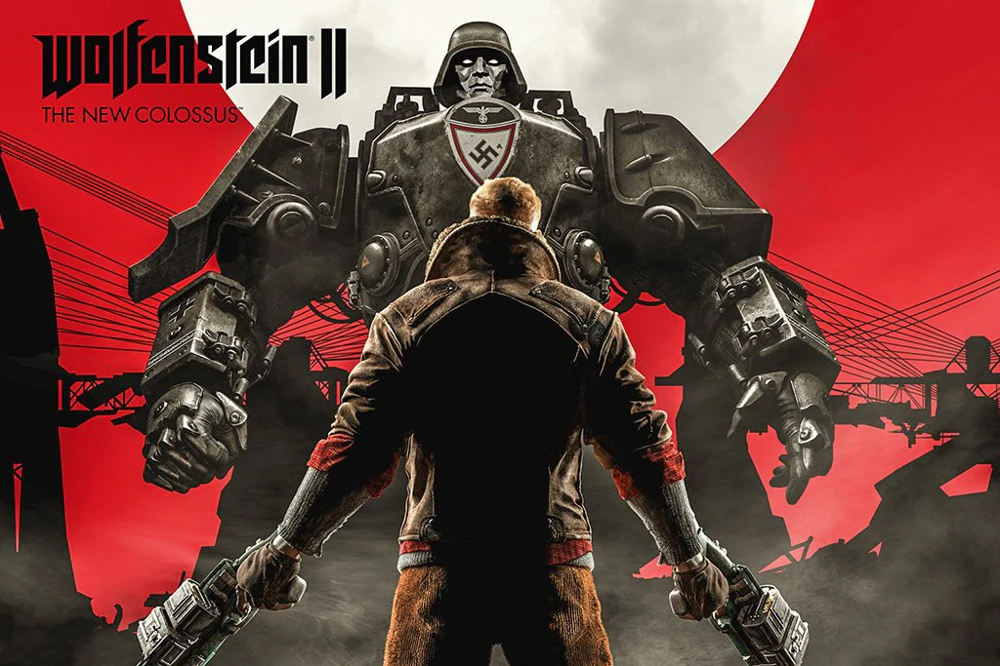

Far Cry 5
Хотя Far Cry еще с первой части отличается активным геймплеем, ни в одной другой игре серии не было столько экшена, сколько в 5-ой части. Действие игры разворачивается в наши дни на территории американского штата Монтана. Сектантская организация «Врата Эдема» терроризирует местных жителей. Они насильно обращают граждан в свою веру и отбирают их имущество. Секта становится настолько могущественной, что создает собственные базы и образует вооруженные силы.
Wolfenstein 2: The New Colossus
Находить баланс между жесткостью и весельем — непростая задача, но MachineGames справились с ней великолепно. Тяжелые военные реалии умело разбавляются шутками и комичными ситуациями, а история главного героя может как погрузить в глубокую печаль, так и заставить рассмеяться во весь голос. Действие игры разворачивается в альтернативной реальности, где гитлеровская коалиция победила во Второй мировой войне. После окончания Wolfenstein: The New Order главный герой Уильям Бласковиц оказывается в коме — братья по оружию заботятся о нем на протяжении пяти месяцев. Когда Бласковиц приходит в себя, он понимает, что должен продолжить борьбу с нацистами и освободить США от оккупации.
Gears 5

Еще один «мясной» шутер современности, на этот раз от Epic Games. С Doom Eternal его роднят высокие оценки как от критиков, так и обычных игроков. Как и в предыдущих частях, сюжет Gears 5 разворачивается на планете «Сера». Действие начинаются сразу после окончания четвертой части, а ее второстепенный персонаж, Кейт Диаз, теперь становится главной героиней. Вместе с товарищами из отряда «Дельта» она должна остановить новых враждебных существ, которые нападают на мирные поселения и похищают жителей. Геймплей Gears 5 представляет собой шутер от третьего лица с укрытиями. Игрок будет сражаться с ордами монстров, пытаясь перебить их всех на замкнутых локациях. Чтобы не попасть под обстрел, придется постоянно искать укрытия. В качестве укрытий используется все, что может защитить от получения урона: руины, ящики, стены, трубы. Динамичные перестрелки, толпы врагов и эпический экшен – вот основные черты Gears 5.
Doom Eternal

В юности игровой индустрии «мясные» шутеры были крайне популярны у разработчиков. Эти игры отличались жестокостью и большим количеством врагов, которые живописно превращались в фарш под выстрелами игрока. Со временем внимание крупных компаний сместилось в сторону классических шутеров в современном сеттинге. В 2016 году id Software под издательством Bethesda выпускает переиздание оригинального Doom, и геймеры со всего мира с восторгом отзываются о новинке. На сайте Metacritic оценки как от пользователей, так и журналистов составили более 80 баллов. Признав эксперимент удачным, разработчики создают более масштабное продолжение под названием Doom Eternal. Эта игра считается лучшим «мясным» проектом современности. Doom Eternal – шутер от первого лица с высоким темпом геймплея. Действие, в отличие от предыдущей части, разворачивается не на Марсе, а на Земле. Пользователю предстоит сражаться против демонов с разными паттернами поведения и оружием. Задача игрока – выбрать наиболее удачную тактику сражения, исходя из места действия, набора противников и имеющегося арсенала вооружения.
Devil May Cry 5

Четвертая часть Devil May Cry вышла в далеком 2008 году. Спустя 11 лет издательство Capcom решило порадовать фанатов новой игрой этой легендарной серии. Devil May Cry 5 получила высочайшие оценки от игроков и профессиональных критиков. Действие разворачивается после окончания четвертой части. Неро, один из главных героев Devil May Cry 4, счастливо живет со своей возлюбленной, пока очередной король демонов не нападает на его товарищей и не возводит в центре города зловещее дерево, которое питается человеческой кровью. Скоро выясняется, что именно этот демон хранит у себя меч главного героя. Теперь Неро вместе с товарищами предстоит снова схлестнуться с нечистью и отобрать драгоценное оружие. Devil May Cry 5 представляет собой классический японский слэшер. Как и в предыдущих частях, игроку предстоит сражаться с ордами демонов. Боевая система такая же глубокая и вариативная, как и в других играх серии, но обновленная благодаря персонажу Ви. Даже после двух прохождений игры вы освоите доступные приемы в лучшем случае на 50%. Этот проект западает в душу благодаря потрясающей работе виртуального оператора и великолепному саундтреку. Игра будет самостоятельно настраивать камеру так, чтобы сражения смотрелись максимально зрелищно и даже театрально.